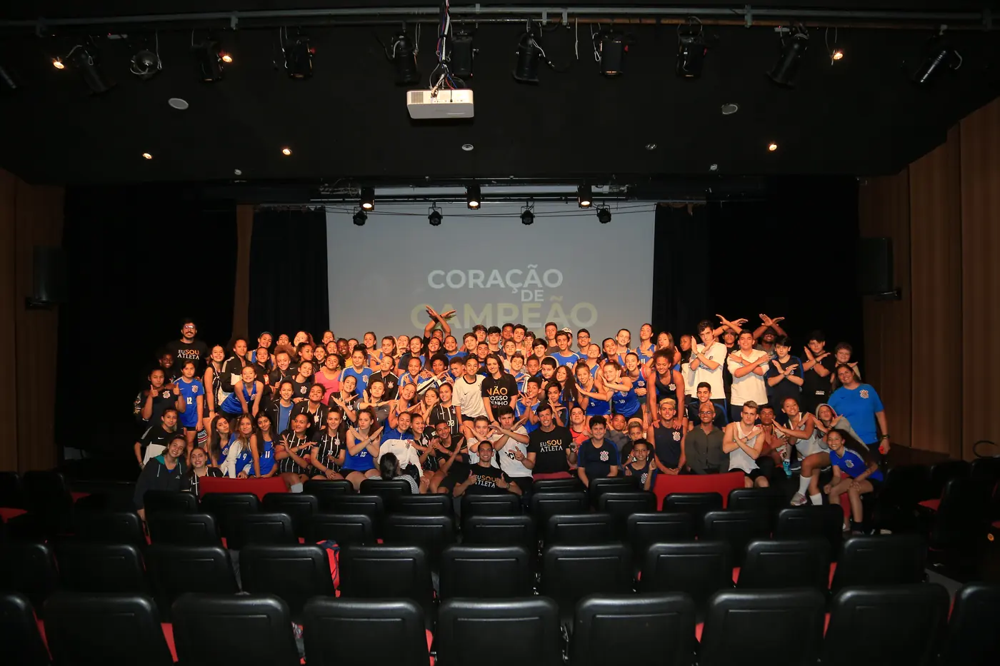
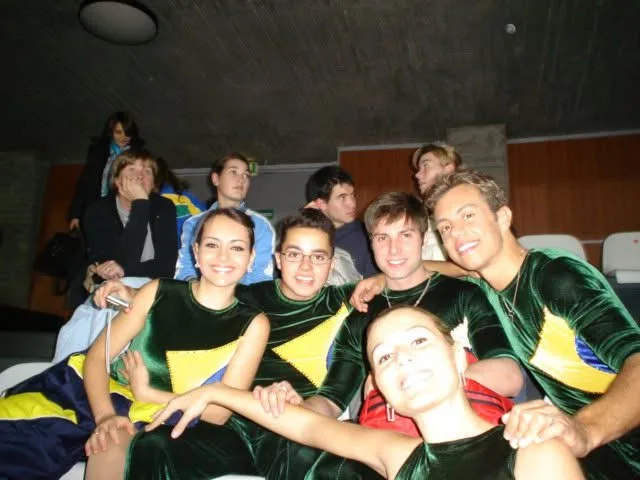
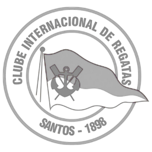
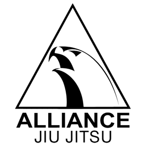

01
Foco e concentração
Reconhecer distrações e voltar a atenção para o próximo ponto.
Na quadra: o intervalo entre um rali e outro, quando a cabeça ainda está no ponto perdido.

Um pocket workshop de treinamento mental para a equipe de badminton da Hípica, construído com a comissão técnica e conduzido por Mayra Ramos.
Proposta enviada em 17 de novembro de 2026 · Leitura de 3 minutos
Um briefing de 5 minutos define a prioridade da equipe.
Conversa breve, dinâmica coletiva e uma ferramenta prática.
A atividade é filmada e vira conteúdo nos canais do Atleta Campeão.
Conquistas divulgadas em hipica.com.br
Técnica e preparo a equipe já tem. Num esporte decidido ponto a ponto, o que acontece na cabeça entre um rali e outro também se treina.

O Atleta Campeão na Prática leva o treinamento mental para o clube, a quadra e a rotina de treino. Acompanhamos a aplicação de uma ferramenta real e registramos a experiência para mostrar como o lado mental se treina no dia a dia.
Na Hípica, o encontro parte do que os técnicos já observam e soma ao trabalho que eles conduzem.
Os técnicos indicam uma prioridade e compartilham situações dos treinos e das competições.
Técnicos · 5 minMayra conduz uma conversa breve, uma dinâmica coletiva e uma ferramenta ligada ao desafio escolhido.
Atletas · no clubeOs atletas saem com uma prática simples para usar na rotina, em sintonia com as orientações da equipe.
Rotina da equipeFormato sugerido: encontro presencial de 45 a 60 minutos. Data, duração e dinâmica seguem a rotina do clube.
Quatro pontos de partida, pensados para o badminton. O briefing também pode indicar outra prioridade.
Reconhecer distrações e voltar a atenção para o próximo ponto.
Na quadra: o intervalo entre um rali e outro, quando a cabeça ainda está no ponto perdido.
Lidar com o erro e se preparar com confiança para a próxima ação.
Na quadra: errar uma devolução fácil e sacar o ponto seguinte sem medo.
Experimentar recursos para lidar com a ansiedade e se preparar para competir.
Na quadra: o 20 a 20 do set decisivo, a final de etapa, o jogo contra o favorito.
Reconhecer emoções e escolher respostas mais úteis diante da frustração.
Na quadra: a irritação com a arbitragem ou com o parceiro de dupla que contamina o jogo.

Mayra Ramos competiu pela Seleção Brasileira de Patinação Artística por duas décadas. Conhece por dentro o treino de alto rendimento, a cobrança e o momento de entrar para competir. Hoje é treinadora mental e fundadora do Instituto Atleta Campeão.
Arquivo pessoal · arraste para o lado
 Mundial, com a Itália
Mundial, com a Itália Delegação brasileira
Delegação brasileira Bastidores de competição
Bastidores de competição Dia de treino
Dia de treino
Com a Seleção Na pista do Mundial
Na pista do Mundial Seleção Brasileira
Seleção BrasileiraRepórter e produtora na TV Tribuna, afiliada da Rede Globo, e comentarista dos Jogos Olímpicos de Inverno pela Record.
Coaching, psicologia esportiva, neurociência esportiva e hipnoterapia clínica.
O método de treinamento mental nasce da experiência dela como atleta.
Atendimentos, cursos e palestras para atletas, pais e treinadores.
Convite ao Prêmio Brasil Olímpico, a maior premiação do esporte nacional.
Mais de 30 mil atletas, pais e treinadores impactados e 400 mil seguidores. Agora, na quadra da Hípica.

